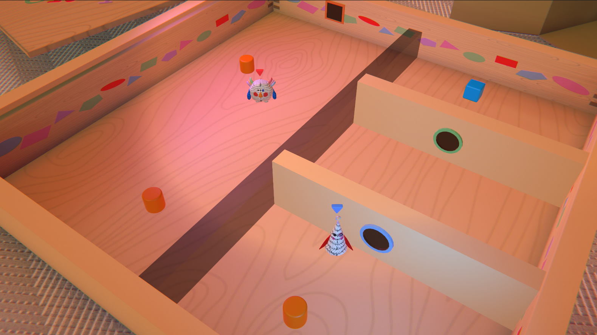
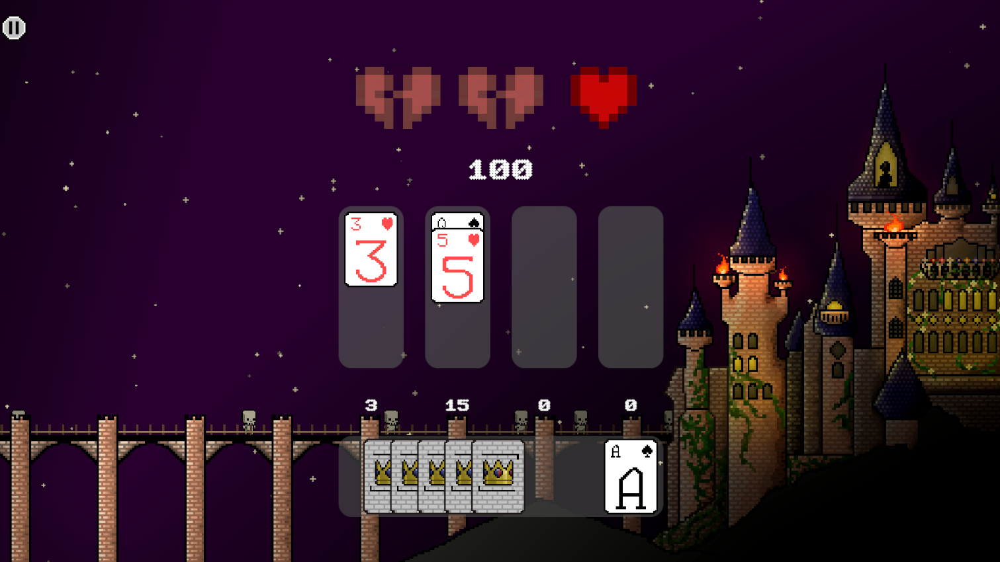
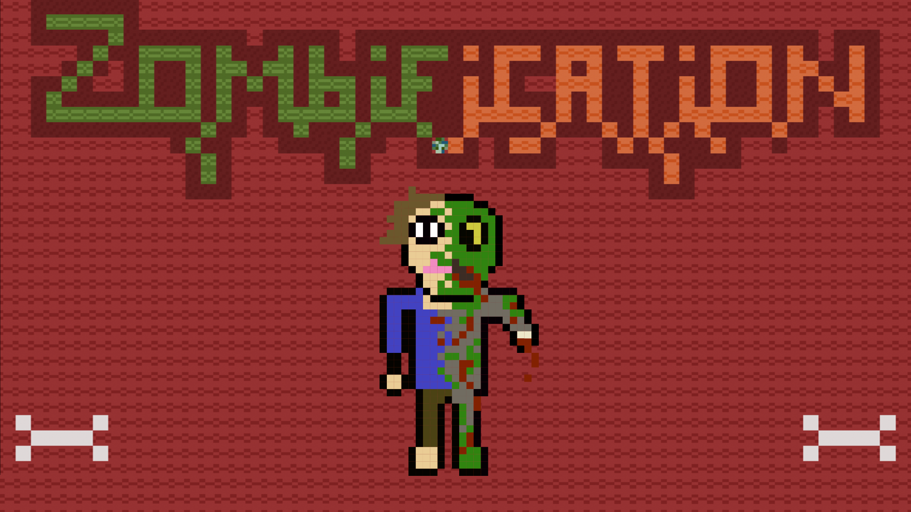
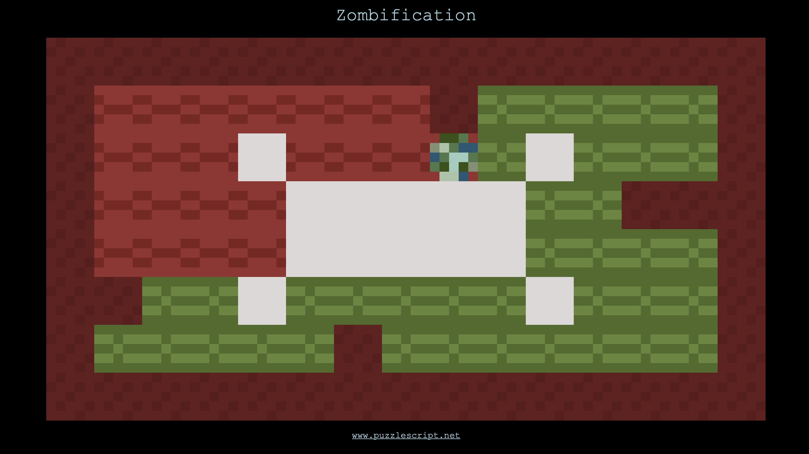
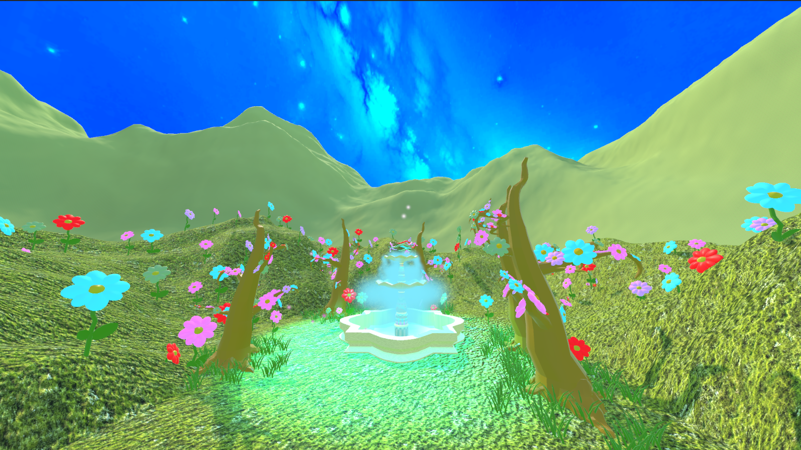
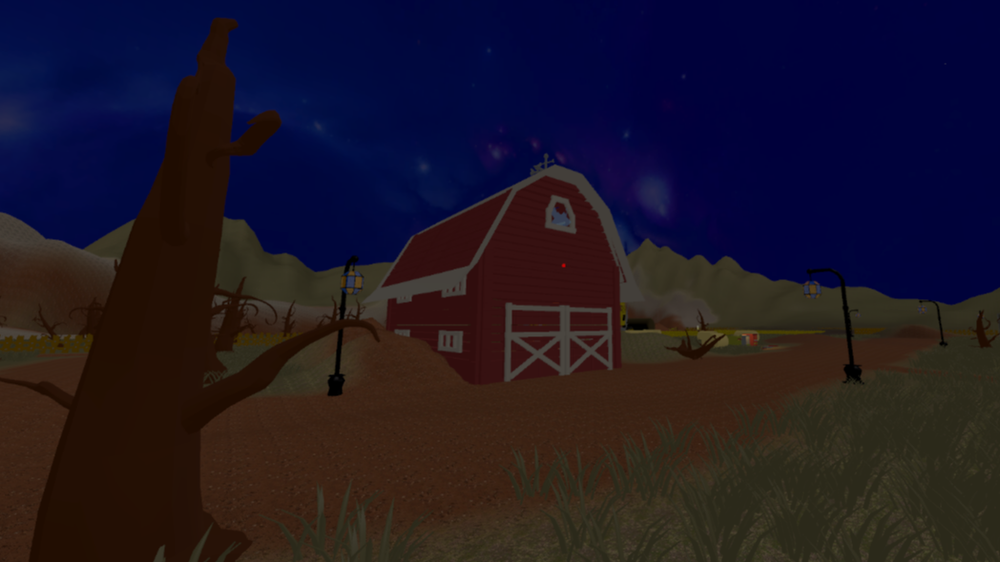
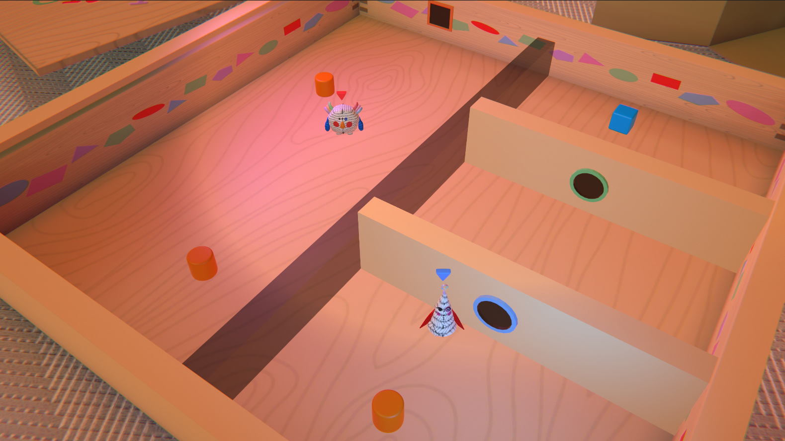
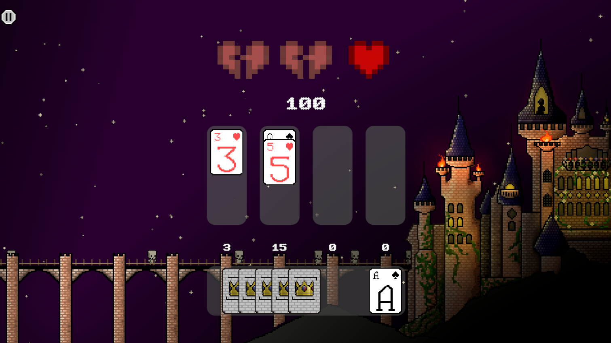
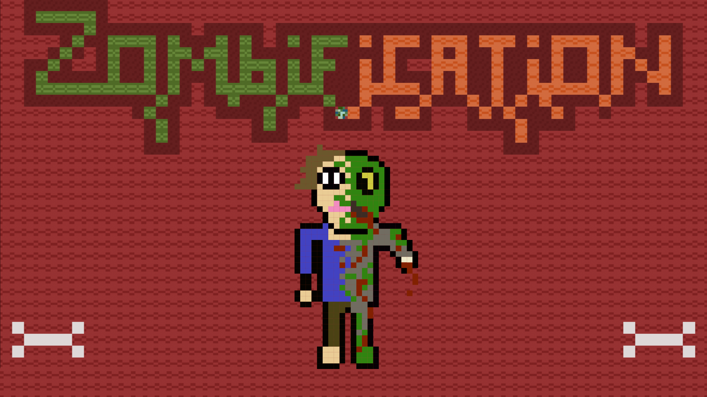
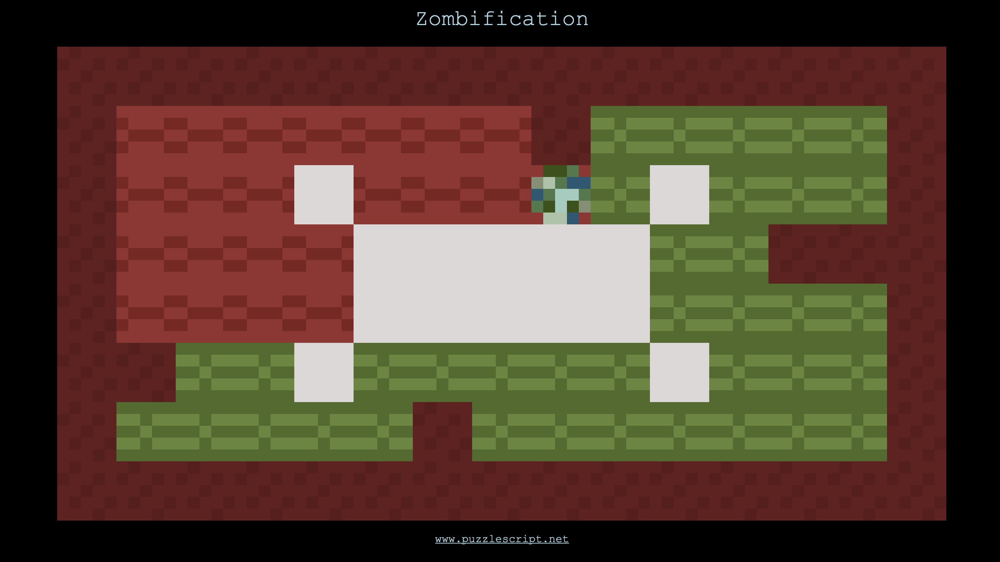
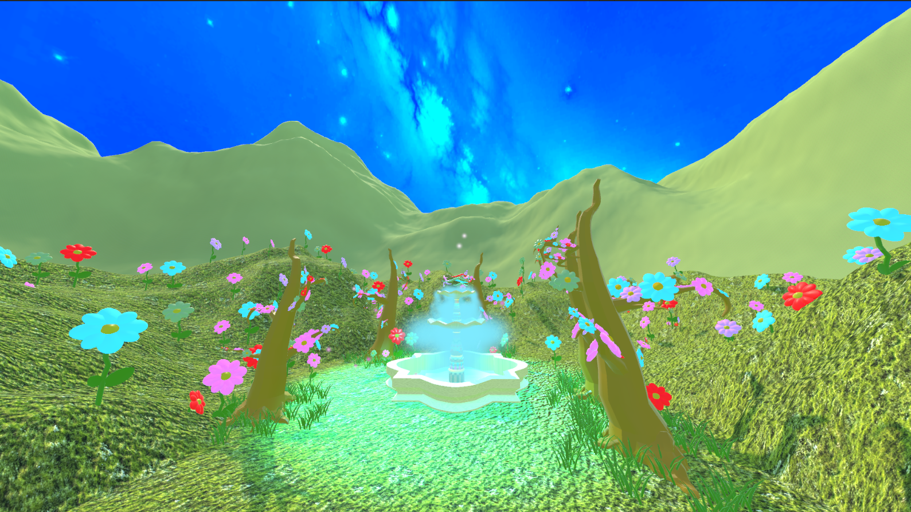
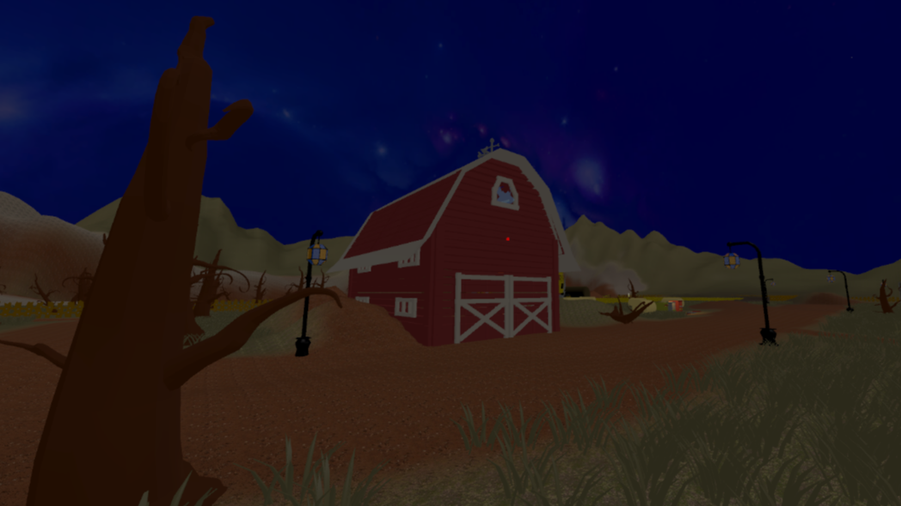
Portfolio Website
Hi, my name is Malakhova Taisia (Taya), I am a Game Design student at the University of Europe for Applied Sciences in Berlin. I am 19 years old and I am from Russia.
My journey into Game Design began almost 2 years ago. Before that, I had been a professional dancer for 12 years. Over time, I became fascinated by the IT world, which led me to explore programming, mathematics, and other technical fields. However, learning informatics was not enough for me, because I wanted to find a way to merge my technical skills with creativity.
For my whole life, I've been drawn to different forms of art: I play piano, sing and record covers, love creative makeup, I am interested in painting and poetry, and also have a big background in the dancing industry. Therefore, when I learned about Game Design, it seemed like the perfect field for me, since it combines both technical skills and artistic expression.
Every day I feel more confident about the choice I've made. There is still a lot to explore and learn about game development and my interests as a game designer, but I already know that I want to grow in this industry and share my ideas with people through the art of games.
This website showcases the main projects I've worked on in the last two years, and I would really like to share them with you. Feel free to explore! And if you want, you can find more information about me on the About Me page, and dive deeper into my projects on the Projects page. Enjoy!
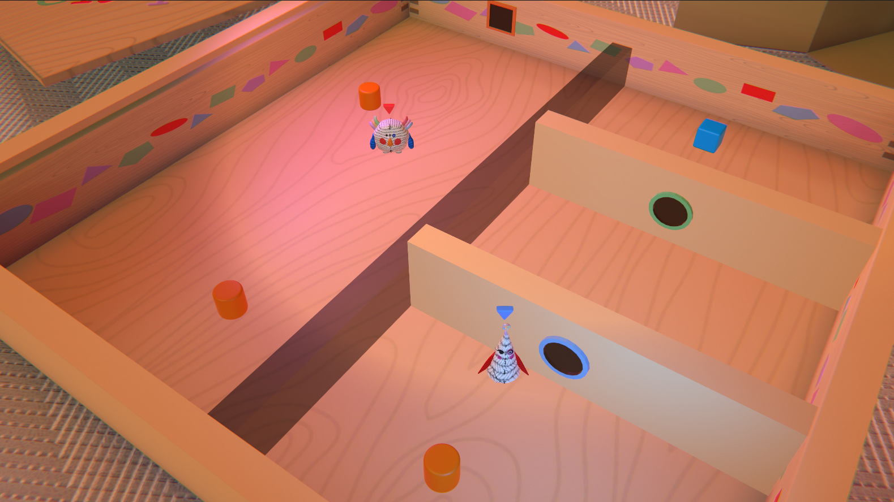
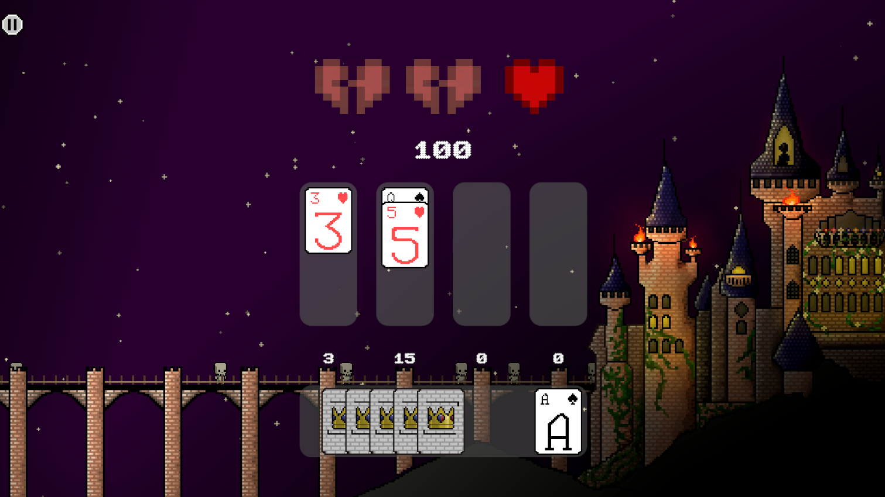
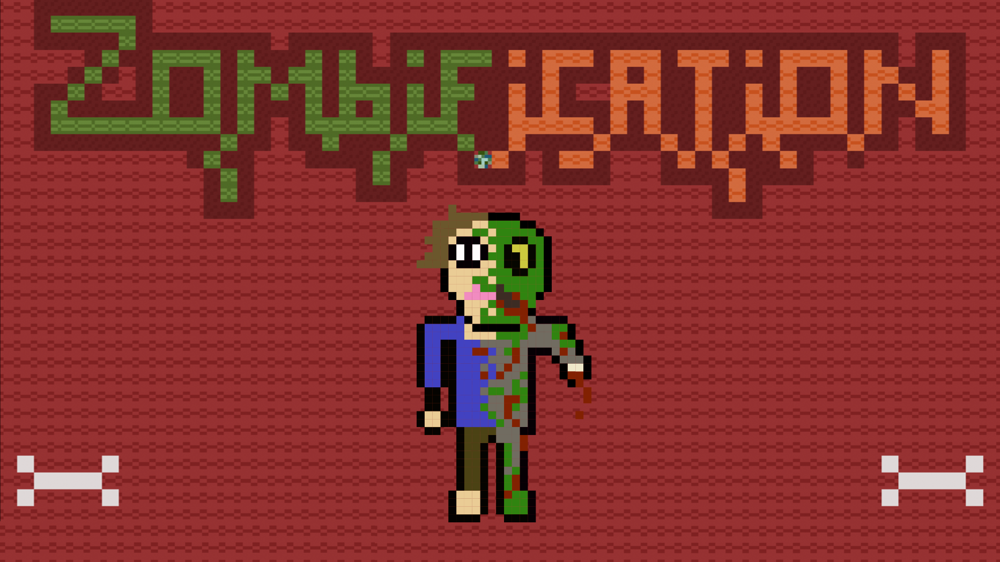
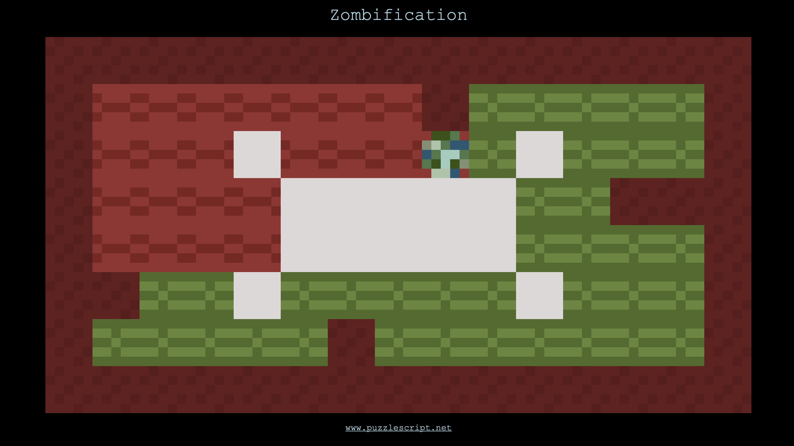
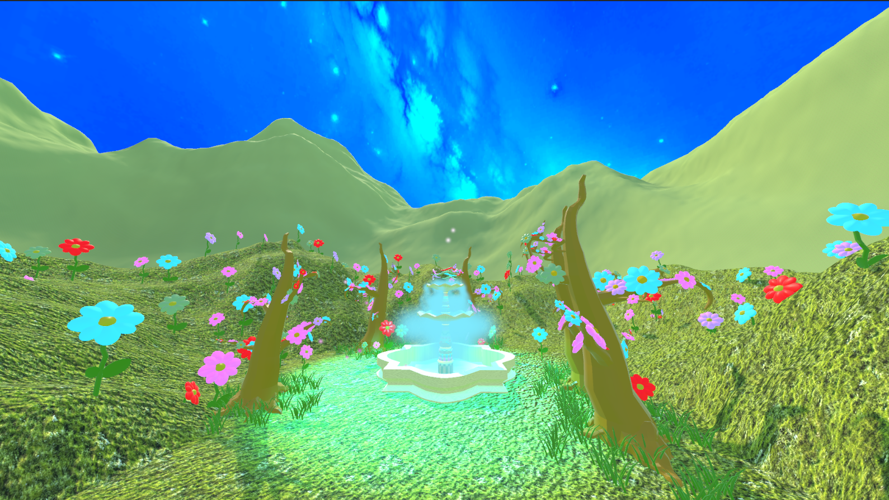
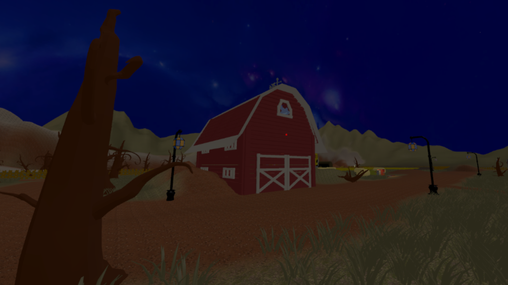